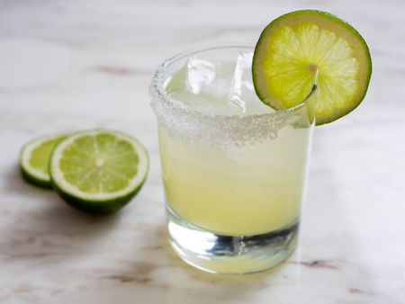

Margarita

A little taste of Mexico
If you love a famous Mexican food chain's 'presidential' margarita, you'll love this recipe. The key is good tequila and brandy.
Ingredients
- Salt for rimming glass
- 3 cubes ice,or as desired
- 4 fluid ounces sweet and sour cocktail mix
- 1 1/4 fluid ounces tequila
- 1/2 fluid ounces orange flavored liqueur (such as Cointreau)
- 1/2 fliod ounce brandy (such as Presidente
- 1 splash lime juice